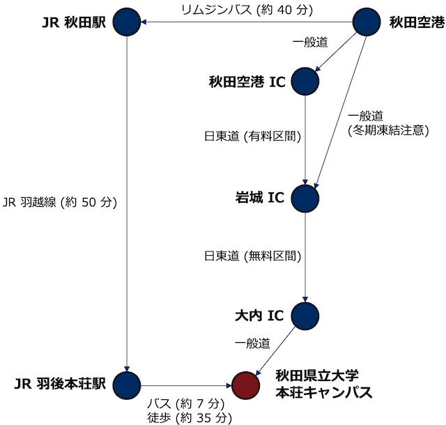

秋田県立大学本荘キャンパスへのアクセス
アクセスマップ

県外から本荘へ
航空便
羽田，新千歳・丘珠，伊丹，中部から定期便がでています．秋田空港フライト情報
公共交通機関を使う場合は，リムジンバス で秋田空港から JR 秋田駅にでてから，JR 羽越線で羽後本荘駅までおいでください．リムジンバスは，到着便に合わせて出ています．(リムジンバスの乗車時間 約 40 分)
レンタカーを使う場合は，一般道で岩城 IC まで行き，そこから日本海東北自動車道(日東道)にのり，大内 IC で降りたあと本荘市内を目指すルートがおすすめです．(岩城 IC から大内 IC は無料通行区間)
ただし，冬期は，秋田空港から岩城 IC までの一般道は凍結するため，雪道に慣れていない方は，秋田空港 IC から日東道にのり，大内 IC までいくルートをご利用ください．
鉄道(JR 秋田駅経由)
JR 秋田駅までは，東京から秋田新幹線が利用できます．秋田新幹線
JR 秋田駅から JR 羽後本荘駅までは羽越線にご乗車ください(乗車時間 約 50 分)．約 60 - 90 分に 1 本の割合で電車が出ています．10 時台と 16 時台にでている特急いなほも利用可能です(乗車時間 約 35 分)．